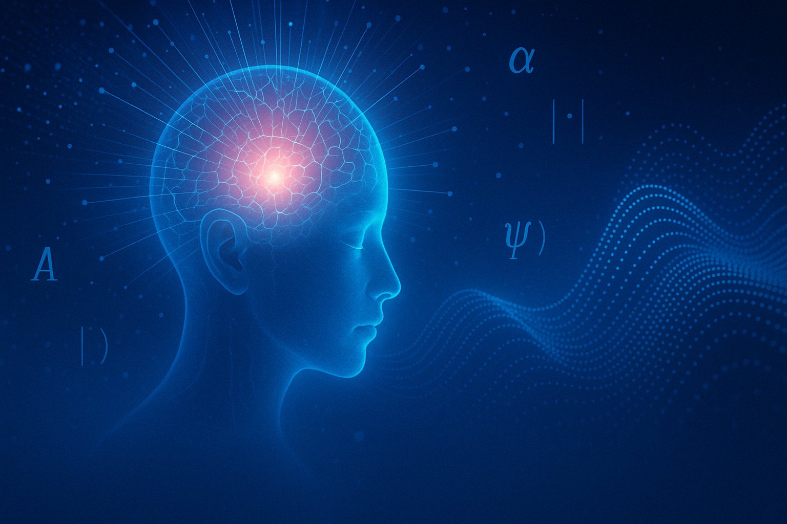

Data: 2025-04-05 | Tagi: świadomość, filozofia, nauka
Świadomość w Fizyce
Niektórzy fizycy twierdzą, że świadomość odgrywa rolę w pomiarze kwantowym – że to obserwator „decyduje” o wyniku eksperymentu.
To podejście filozoficzne, ale stawia ciekawe pytania: czy wszechświat istnieje niezależnie od nas? A może akt obserwacji współtworzy rzeczywistość?
Choć brzmi to jak science fiction, temat ten jest poważnie rozważany przez wielu naukowców i filozofów.